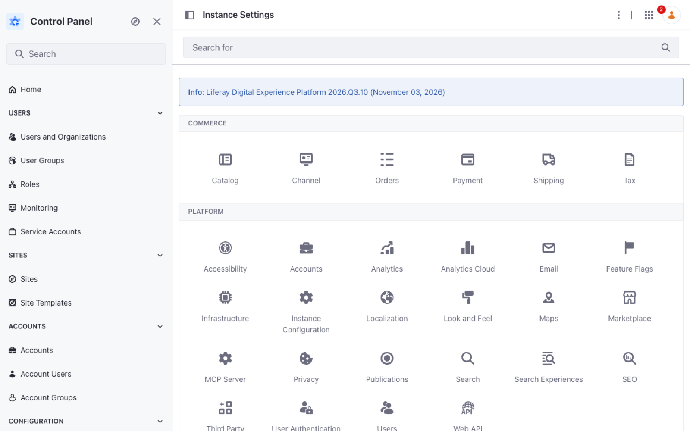
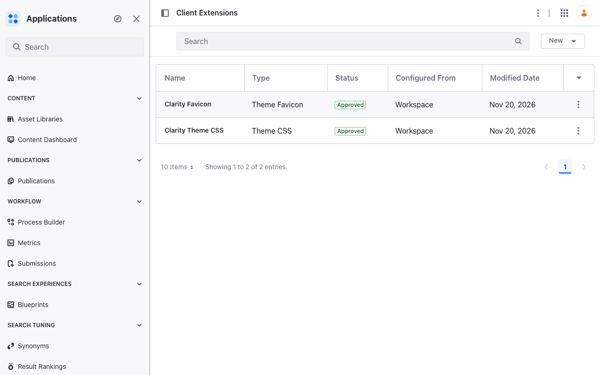
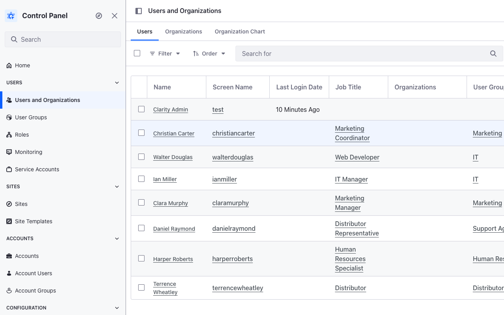
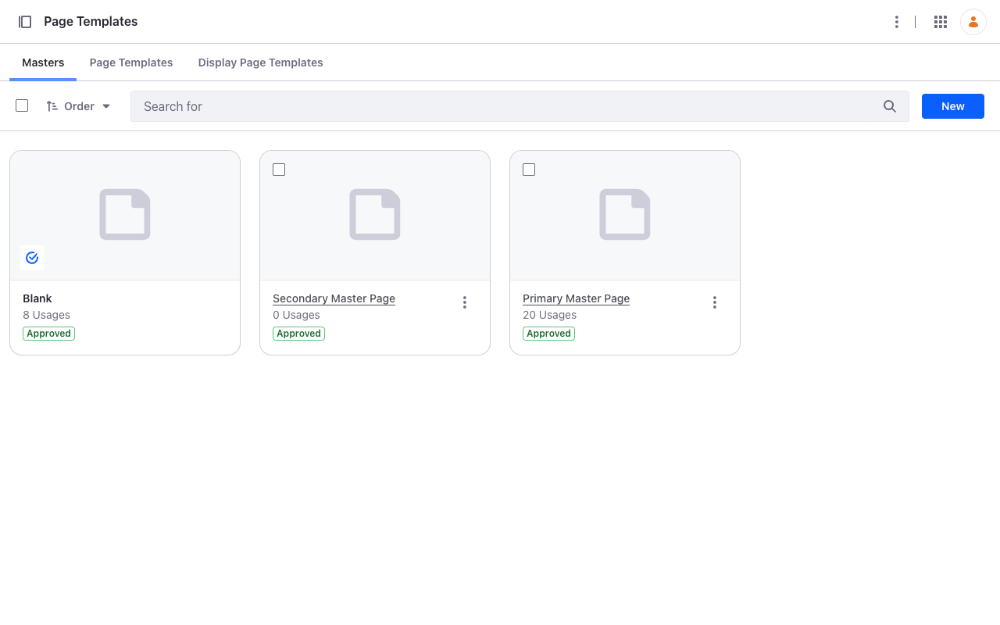
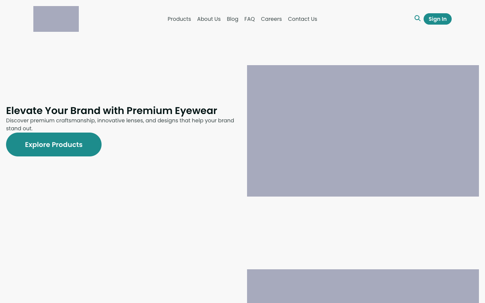
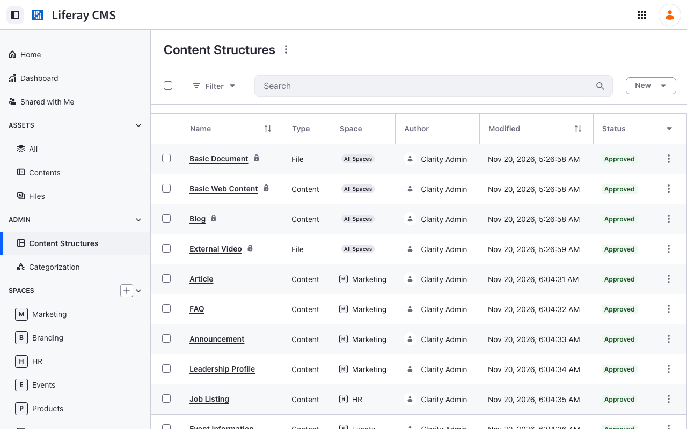

Activation key: configs/local/deploy/, never leaves your machine
Setup
MCP: how the agent talks to Liferay
MCP is a standard way for an agent to use tools
DXP 2026.Q3 serves it at /o/mcp: the headless APIs as tools
The agent reads each tool's schema, then calls it as the user it signs in as
Two switches: flag LPD-63311 (already set) and the MCP Server setting
Restart your agent session after you connect

Control Panel → Instance Settings → Platform → MCP Server
Challenge time
Setup: workspace, DXP and the MCP server
Workbook: Setup · Original BEWL challenge 2
S.1Open the workspace and seed the context files
S.2Start PostgreSQL and Liferay DXP (you run these commands)
S.3Save the admin credentials for the agent
S.4Turn on Liferay's MCP server, then restart your agent session
S.5Read the terrain: the agent confirms the facts, changes nothing
S.4 and S.5: the version banner and the MCP Server tile
Verify habit: check each answer against the source. clarity-postgres is healthy, Server Administration shows PostgreSQL, the MCP Server setting is enabled, and liferay is listed as connected.
Capabilities and deployment options
Three ways to run Liferay
Self-Hosted
You own hardware, platform and updates
Fits data residency rules or heavy internal integration
Cloud Native Experience can automate it
PaaS
Liferay provides the services; you manage the app
Fits when you must change Liferay, not only extend it
You keep control of the infrastructure
SaaS
Liferay runs everything, including upgrades
The fastest route to building
You extend with client extensions
The model changes who operates the solution, not how you build it. Clarity runs on SaaS.
Capabilities and deployment options
Build as code with workspace and client extensions
A Liferay Workspace holds code and settings for every environment
Client extensions run outside Liferay's core, so they survive upgrades
Supported on Self-Hosted, PaaS and SaaS
A site initializer builds a whole site from files
Your agent edits the files, deploys, you check the result

Applications → Client Extensions: deployed from the workspace (Level 5)
Liferay Data Platform
Knowing what visitors actually did
Building the site is half the loop; measuring it is the other half
Site, page and content metrics with no tracking code added
Known and anonymous visitor profiles, and account profiles
A/B tests run in DXP, and Data Platform reports the results
Segments built here are the supported path; Level 13 shows a user-group alternative
Level 1 · The business case
A website run by a team, not one administrator
What Clarity needs
IT, Marketing, HR and Support each work on the site, and outside distributors sign in to it
Each person gets only the permissions their work requires
People come and go: access must follow the department, not the person
How Liferay answers
Users, grouped by department in user groups
Roles that describe a job: Content Manager, Marketing Coordinator, IT Manager
Permissions granted to roles, never to one person
R1
Who it's for: Ian Miller (IT), Clara Murphy and Christian Carter (Marketing), Harper Roberts (HR), Daniel Raymond (Support), Terrence Wheatley (distributor)
Done when: Christian can write content but can't change how the site is set up.
Users and permissions
Authentication is not authorization
Authentication: who the user is
Sign in by email, screen name or user ID
Liferay's own sign-in is a quick start
OpenID Connect or SAML delegate it to an identity provider
Authorization: what they can do
Access to sites and pages
Who sees content and documents
Which applications they can use
Authorization lives in roles: Control Panel → Roles
Users and permissions
Users, user groups and roles
A role is a set of permissions: actions on resources
Scope is half of a role: regular (whole instance), site, organization, space
User groups collect people who share a responsibility
Assign roles to groups, not people: one change covers every member
1.1Create Clarity's user groups, roles and personas
🧠Knowledge check: three questions on your own, then we go over the answers
1.2Bonus: let Clara manage the Marketing group's members, nothing more

Users and Organizations after 1.1: seven personas with job titles and groups
Verify habit: in the Control Panel, open Users, User Groups and Roles and compare with the brief. Then sign in as Christian in a private window: no password change prompt.
Level 2 · The business case
One brand, its own address, two languages
What Clarity needs
A public website at www.clarityvisionsolutions.com
Visitors in the United States and Spain: English and Spanish
An accessible site, and later a separate portal for distributors
How Liferay answers
Sites in one instance, each with its own members and settings
Site languages, a virtual host and the accessibility menu
Instance settings that send every visitor to the public site
R2
Who it's for: Ian Miller, who owns the sites, and every visitor
Done when: A visitor opens Clarity's address and lands on its site, in their language.
Sites
Instances and sites
An instance holds many sites, sharing code, themes and widgets
Each site has its own pages, content, members and settings
2.3Configure the public site: address, languages, accessibility
2.4Give the Marketing Coordinator role its permissions
2.5Point the instance at the public site
🧠Knowledge check: three questions on your own, then we go over the answers
Sites after 2.1: the public site is Open, the distributor portal Restricted
Verify habit: Site Settings and Memberships for the site; impersonate Christian before and after 2.4 and watch Site Builder → Collections and Categorization → Categories appear. Close dialogs without saving.
Level 3 · The business case
Visitors must find their way, on every page
What Clarity needs
A clear site map: Products, About Us, Blog, FAQ, Careers, Contact Us
The same header and footer on every page
A page for every article, leader and product, without building each one
How Liferay answers
Content pages, organized in a page hierarchy
Master pages for the shared header and footer
Display page templates and navigation menus
All of it in a site initializer, so the site can be rebuilt anywhere
R3
Who it's for: Walter Douglas, Web Developer, and every visitor
Done when: Changing the header once changes it on every page.
Pages and navigation
The site lives in code
A site initializer client extension in client-extensions/clarity-site/
A folder tree of JSON: pages, masters, menus, fragments, style books
Liferay applies it to the site every time it's deployed
The agent edits and deploys; you check in Liferay's editors
Version-controlled, and rebuildable on any environment
Pages and navigation
Content pages, not widget pages
Content pages
Composed visually, in context, from fragments and widgets
Personalized experiences and translations
The page type for anything new
Widget pages
Deprecated as of DXP 2026.Q3, off for new installations
You'll still meet them on upgraded instances
Site Builder → Pages: every Clarity page is a Content Page
Also: utility pages (sign in, errors, cookie policy) and display pages that show one item each.
A master page holds what every page shares, around a drop zone
It can limit which fragments authors drop into its pages
A page template starts a page from a master and a layout
A display page template renders every item of a type, field by field
Clarity: a Primary master for content pages, a lighter Secondary for sign-in
Pages and navigation
Menus and navigation
Menus are built independently of the page tree
A menu is a tree of items: pages, URLs or labels
Items can be hidden from roles that shouldn't see them
Building a menu and rendering it are separate steps
The Menu Display fragment renders a menu on a page or master
Navigation Menus after 3.3: the header menu and three footer menus
Challenge time
Level 3: pages, master pages and navigation
Workbook: Level 3 · Original BEWL challenges 5 and 6 · Requirement R3
3.1Scaffold the site initializer and the page hierarchy
3.2Build the Primary and Secondary master pages
3.3Create the navigation menus and wire them in
🧠Knowledge check: three questions on your own, then we go over the answers
3.4Bonus: the Sign In utility page on the Secondary master

Page Templates → Masters after 3.2
Verify habit: Site Builder, Pages for the order; the master's Browser panel and allowed fragments; Navigation Menus; then Home as a visitor. Leave editors without publishing.
Level 4 · The business case
Marketing builds pages without waiting for IT
What Clarity needs
Clarity's own buttons, cards, search and sign-in, the same everywhere
Marketers who assemble new pages themselves
A quick prototype of Home and FAQ before the content is ready
How Liferay answers
Fragments: HTML, CSS and JavaScript components with configuration options
A fragment set, Clarity Components, for authors to drop onto pages
Page compositions to wireframe Home and FAQ
R4
Who it's for: Walter Douglas builds the components; Clara and Christian use them
Done when: A new page uses Clarity's own components, not copied HTML.
Fragments
Fragments are the building blocks
HTML, CSS and JavaScript with editable areas
A configuration defines the options authors set
Each copy on a page holds its own content
Clarity's live in a Clarity Components fragment set
Editable IDs matter: later levels map content onto them
5.2Clarity's Theme CSS and favicon client extensions
5.3Apply the brand to the site and its master pages
🧠Knowledge check: three questions on your own, then we go over the answers

Home as a visitor after 5.3: Poppins and teal buttons (grey boxes are image placeholders)
Verify habit: Home in a private window shows Poppins, teal buttons and the favicon; Applications, Client Extensions lists both as Ready; the master's design options show Clarity Theme CSS.
Level 6 · The business case
Write content once, use it anywhere
What Clarity needs
Articles, FAQs, announcements, leadership profiles, job listings and events
Each team owns its own content: Marketing, HR, Events
Content organized by topic, and reusable on more than one site
How Liferay answers
Liferay CMS Spaces, one per team, with their own members
Content and file structures that define each type of content
Vocabularies and categories, and Spaces connected to sites
R6
Who it's for: Clara Murphy and Christian Carter (Marketing), Harper Roberts (HR)
Done when: HR manages job listings in its own Space, and the public site shows them.
Liferay CMS
Two content management systems
Liferay CMS
Content lives in Spaces, independent of any site
One Space can feed many sites and channels
Built for non-technical authors and marketing
Classic CMS
Content lives in the site or asset library that made it
Web content structures and templates
Built for power users and site administrators
Liferay CMS home: quick actions per structure, Spaces in the sidebar
Both ship and run side by side. This course uses Liferay CMS throughout: Spaces replace asset libraries, content structures replace web content structures.
Liferay CMS
Spaces
A Space is a content repository that belongs to no site
Connect a Space to a site to show its content there
Each Space has its own members, folders, structures and categories
Space roles add permissions on top of site roles
Clarity: Marketing, Branding, HR, Events and Products
File structures add a required file and its metadata
Limit each structure to the Spaces that use it
Publishing one generates its REST and GraphQL APIs

CMS → Content Structures after 6.2: each limited to its Space
Liferay CMS
Categories or tags
Categories
Grouped in vocabularies, can nest
Defined by administrators, applied by authors
Drive navigation, facets and dynamic collections
Tags
Created on the fly by authors
Informal, crowd-sourced labels
Help search and discovery
FAQ · Marketing
Pricing and OrderingProducts and ServicesRetail PartnersReturns and Exchanges
Articles · Marketing
InnovationIndustryStyle
Region · HR
Asia PacificEuropeLatin AmericaNorth America
Location · HR
Brazil, RecifeIreland, DublinJapan, TokyoSpain, MadridRemote+ 9 more
Job Positions · HR
Customer ServiceOptical EngineersProduct Designers+ 8 more
Challenge time
Level 6: content in Liferay CMS
Workbook: Level 6 · Original BEWL challenges 9, 10, 11 and 14 · Requirement R6
6.1Create the Spaces and their members
6.2Model Clarity's content structures
6.3Create the vocabularies
6.4Load Clarity's content and files with a re-runnable script
🧠Knowledge check: three questions on your own, then we go over the answers
6.5Bonus: relate events to their images
CMS → Contents after 6.4: one folder per kind of content
Verify habit: in CMS, check each Space's members and connected site, impersonate Christian (Marketing and Events only), then count FAQs, job listings and files against the brief.
Day 1 wrap-up
Key takeaways
You verify, the agent buildsEvery result is checked where it lives in Liferay
Roles to groups, least privilegeScope decides where a permission applies
The site is codeA site initializer makes it versioned and rebuildable
Master, then pageThe master sets the frame, fragments fill the page
Design through layersStyle books for tokens, Theme CSS for the brand
Content lives in SpacesA structure is a schema, and publishing it creates APIs
Day 1 close
Questions?
Tomorrow: displaying content, commerce, headless APIs, workflow and publishing, search, objects and personalization.